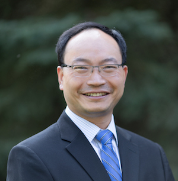

Authors
Weisong Shi, Dr. Weisong Shi is a Charles H. Gershenson Distinguished Faculty Fellow and a Professor of Computer Science at Wayne State University. There he directs the Mobile and Internet Systems Laboratory, Connected and Autonomous Driving Laboratory, Intel IoT Innovators Lab, and Wayne State Data Science Initiative and Wireless Health Initiative, investigating performance, reliability, power- and energy-efficiency, trust and privacy issues of networked computer systems and applications. He founded the Metro Detroit Workshop on Connected and Autonomous Driving (MetroCAD).
Dr. Shi is one of the world leaders in the edge computing research community, and has been advocating Edge Computing (Fog Computing) since 2014, a new computing paradigm in which the computing resources are placed at the edge of the Internet, in close proximity to mobile devices, sensors, end users and the emerging Internet of Everything. He co-chaired the NSF Workshop on Grand Challenges in Edge Computing, and was the founding steering committee chair of ACM/IEEE Symposium on Edge Computing (SEC). He was interviewed by China Science Daily on the Rise of Edge Computing in December 2016. Check out his new book on Edge Computing. Part of their work on edge computing is supported by NSF and Facebook.
Dr. Shi is an expert in energy efficient computer systems research, including battery management for mobile systems and energy efficient data center design. He is also very active on the workload characterization and has received the best paper award of IISWC 2012 for their work on Taobao Hadoop workload analysis. His work has been adopted and used by industry, such as Baidu, Alibaba, and Intel. In addition to publications, his group has developed several tools that have been widely used by the community, including pTop, a process-level power profiling tool, has been downloaded more than 600 times from more than 30 countries; SPAN, a software power analyzer, has been downloaded more than 400 times since its release in 2012.
Dr. Shi is also well known for his research and leadership on smart and connected health. He leads the Wireless Health Initiative at Wayne State University, and serves as the founding Editor-In-Chief of Smart Health Journal. In 2016, he served as the founding steering committee chair of IEEE/ACM Conference on Connected Health (CHASE). He was interviewed by Healthcare Analytics News on How Edge Computing Can Advance Healthcare in January 2018.
Dr. Shi is a recipient of the National Outstanding Ph.D. dissertation award of China (2002), the NSF CAREER award (2007), Wayne State University Career Development Chair award (2009), Charles H. Gershenson Distinguished Faculty Fellow (2015), College of Engineering Faculty Research Excellence Award (2016), the Best Paper award of ICWE'04, IEEE IPDPS'05, HPCChina'12, IEEE IISWC'12, the Best Paper Nominee award of ACM UbiComp'14, the Best Student Paper Award of IEEE HealthCom'15, IEEE eHealth Best Paper Award 2017. He is an IEEE Fellow and a Distinguished Scientist of ACM. According to Google Scholar, his H-index is 38 and has a total of 5000+ citations. Dr. Shi's research group is actively collaborating with industry partners, such as Alibaba, Baidu, DENSO, Facebook, IBM, Intel, InterDigital, NetEase, Nokia Bell Labs, to name a few.
Dr. Shi was on leave with the National Science Foundation as a program director in the Division of Computer and Network Systems, Directorate of Computer and Information Science and Engineering during 2013-2015. During his tenure at NSF, Dr. Shi mainly responsible for the Computer Systems Research (CSR) core program and two crosscutting programs, including Cyber-Innovation for Sustainability Science and Engineering (CyberSEES), Smart and Connected Health (SCH). Dr. Shi has been actively involved in the activities of IEEE Computer Society. He had served as the Chair of the Technical Committee on the Internet (TCI) during 2012-2016. He is currently serving on the Academic Advisory Board of IEEE Computer Society.
Contact us
Address:
5057 Woodward Ave, Detroit, MI 48202
Contact Number:
(313) 577-3186
Email:
weisong AT wayne dot edu